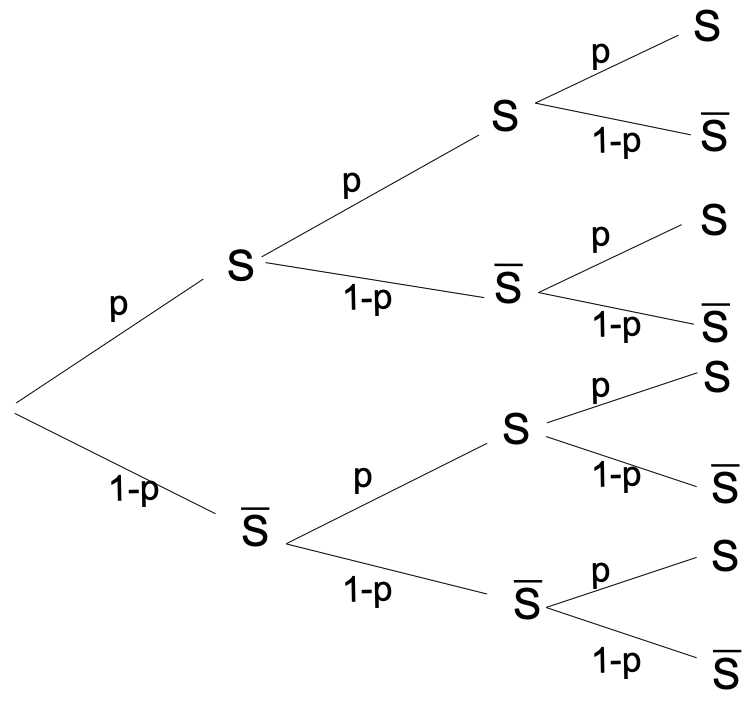
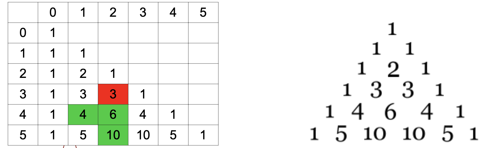
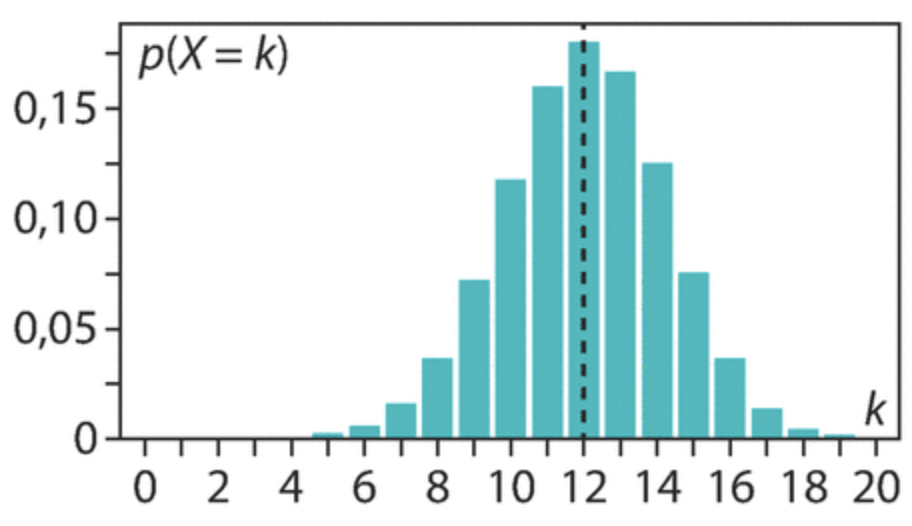
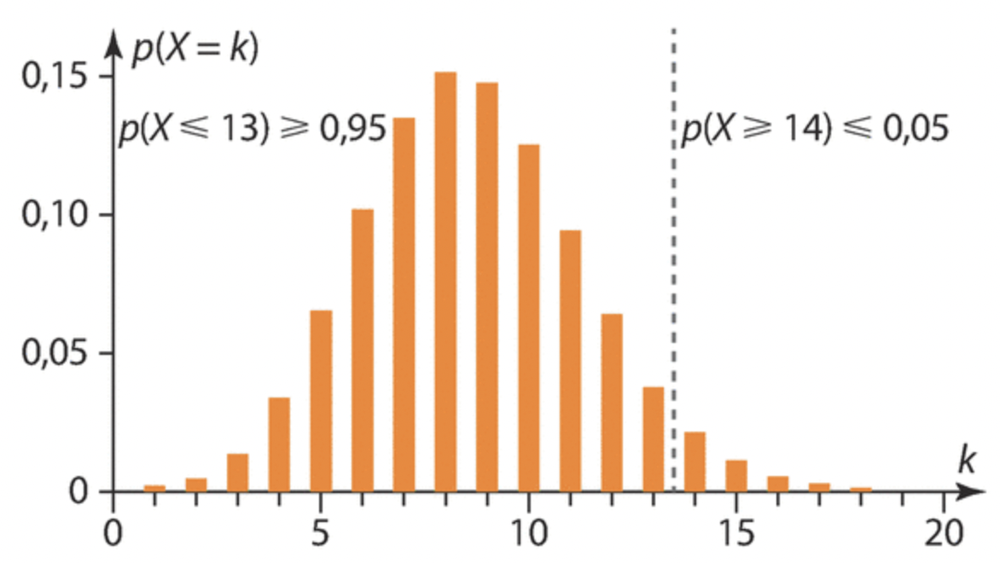
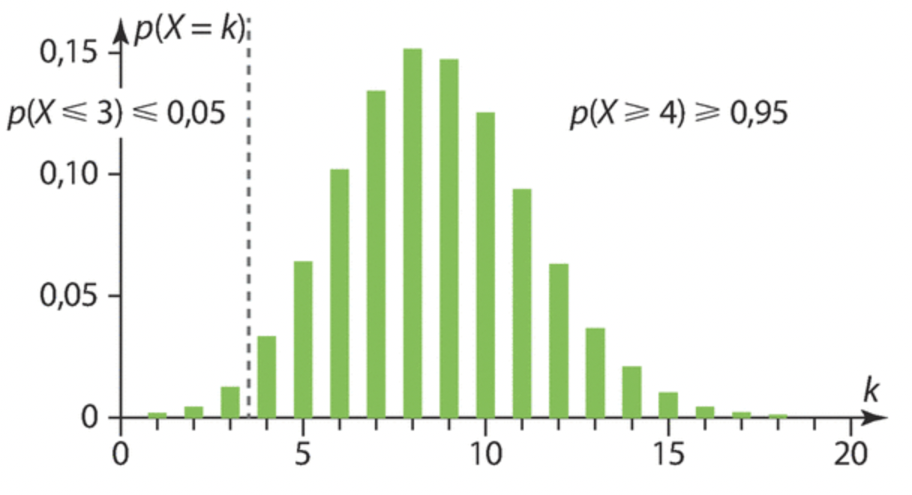
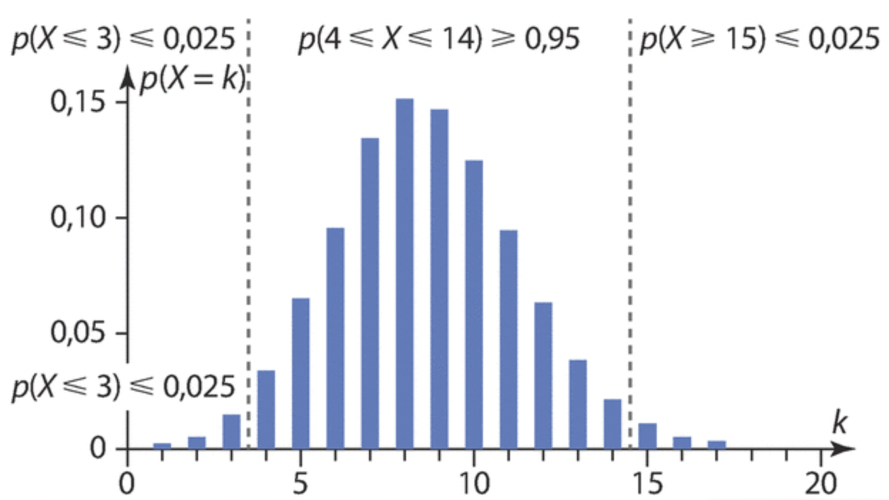

Loi binomiale
1 Rappel sur les variables aléatoires
1.1 Exemple
On lance 2 fois de suite une pièce de monnaie supposée équilibrée. On appelle P l’événement « on obtient pile » et F l’événement « on obtient face ». Une éventualité se présente comme un couple de lettres éventuellement identiques. L’univers \Omega de cette expérience est \Omega=\{PP,FF,PF,FP\}. Toutes ces issues sont équiprobables.
On décide que :
- si on obtient 2 fois pile, on gagne 2 € ;
- si on obtient 2 fois face, on perd 1 € ;
- dans tous les autres cas, on perd 0,50 €.

La fonction X qui, à chaque issue de \Omega, associe le gain du joueur, prend comme valeurs : x_1=2, x_2=-1 et x_3=-0{,}5.
L’événement « X prend la valeur 2 » se note (X=2).
Sa probabilité est p_1=P(X=2)=\dfrac{1}{4}. De même, p_2=P(X=-1)=\dfrac{1}{4} et p_3=P(X=-0{,}5)=\dfrac{1}{2}.
On résume en général la loi de probabilité de X dans un tableau.
| x_i | 2 | -1 | -0{,}5 |
|---|---|---|---|
| p_i | \dfrac{1}{4} | \dfrac{1}{4} | \dfrac{1}{2} |
1.2 Variable aléatoire réelle et loi de probabilité
Soit \Omega l’univers d’une expérience aléatoire.
Une variable aléatoire X sur \Omega est une fonction définie de \Omega dans \mathbb{R}.
Si x_i désigne la valeur prise par X, on note (X=x_i) l’événement « X prend la valeur x_i ».
La loi de probabilité de la variable X associe à chaque valeur x_i la probabilité de l’événement (X=x_i).
On présente habituellement cette loi sous forme d’un tableau :
| x_i | x_1 | x_2 | \dots | x_n |
|---|---|---|---|---|
| P(\{X=x_i\}) | p_1 | p_2 | \dots | p_n |
Comme pour toute loi de probabilité, on a toujours : \displaystyle\sum_{i=1}^n p_i=1.
Soit a un réel.
On note \{X\geqslant a\} l’événement « la variable aléatoire X prend une valeur supérieure ou égale à la valeur a ».
On peut définir de la même manière les événements \{X>a\}, \{X<a\} et \{X\leqslant a\}.
1.3 Espérance, variance et écart-type
Soit X une variable aléatoire de loi de probabilité :
| x_i | x_1 | x_2 | \dots | x_n |
|---|---|---|---|---|
| P(\{X=x_i\}) | p_1 | p_2 | \dots | p_n |
On appelle espérance de X le nombre réel, noté E(X), défini par :
E(X)=\sum_{i=1}^n x_i\times P(X=x_i)
E(X) s’interprète comme la valeur moyenne des valeurs prises par X lorsque l’expérience est répétée un grand nombre de fois.
Reprenons la première application (lancer de deux pièces) :
| x_i | 2 | -1 | -0{,}5 |
|---|---|---|---|
| p_i | \dfrac{1}{4} | \dfrac{1}{4} | \dfrac{1}{2} |
Calculer l’espérance de X et interpréter le résultat.
E(X)=2\times\dfrac{1}{4}+(-1)\times\dfrac{1}{4}+(-0{,}5)\times\dfrac{1}{2}=0.
Sur un grand nombre de parties, le joueur gagne en moyenne 0 € par partie.
- Si l’espérance est nulle, on dit que le jeu est équitable.
- Si l’espérance est positive, on dit que le jeu est favorable au joueur.
- Si l’espérance est négative, on dit que le jeu est défavorable au joueur.
Linéarité de l’espérance
Soit X une variable aléatoire et a et b deux réels.
E(aX+b)=aE(X)+b
Soit X une variable aléatoire dont la loi de probabilité est :
| x_i | x_1 | x_2 | \dots | x_n |
|---|---|---|---|---|
| P(\{X=x_i\}) | p_1 | p_2 | \dots | p_n |
Soit a et b deux réels. La variable aléatoire aX+b suit la loi de probabilité :
| ax_i+b | ax_1+b | ax_2+b | \dots | ax_n+b |
|---|---|---|---|---|
| P(\{X=x_i\}) | p_1 | p_2 | \dots | p_n |
On peut remarquer que seules les valeurs de la variable aléatoire changent, pas les probabilités correspondantes.
Par définition de l’espérance on a :
\begin{align*} E(aX+b)&=\sum_{i=1}^n (ax_i+b)\times P(X=x_i) \\ &=\sum_{i=1}^n \left[ ax_i\times P(X=x_i)+b\times P(X=x_i)\right] \\ &=a\sum_{i=1}^n x_i\times P(X=x_i)+b\sum_{i=1}^n P(X=x_i) \\ &=aE(X)+b \end{align*}
Soit X une variable aléatoire dont la loi de probabilité est :
| x_i | x_1 | x_2 | \dots | x_n |
|---|---|---|---|---|
| P(\{X=x_i\}) | p_1 | p_2 | \dots | p_n |
On appelle variance de X le nombre réel positif, noté V(X), défini par :
V(X)=\sum_{i=1}^n\left[x_i-E(X)\right]^2\times P(X=x_i)
Formule de König-Huygens
V(X)=\sum_{i=1}^n x_i^2\times P(X=x_i)-\left[E(X)\right]^2
Si la variable aléatoire X prend respectivement les valeurs x_1,x_2,\dots,x_n avec les probabilités p_1,p_2,\dots,p_n, alors la variable aléatoire X^2 prend respectivement les valeurs x_1^2,\dots,x_n^2 avec les probabilités p_1,\dots,p_n. Ainsi :
\begin{align*} V(X)&=\sum_{i=1}^n\left[x_i-E(X)\right]^2\times p_i \\ &=\sum_{i=1}^n\left(x_i^2-2\times E(X)\times x_i+E(X)^2\right)p_i \\ &=\sum_{i=1}^n\left(x_i^2p_i-2\times E(X)\times x_ip_i+E(X)^2p_i\right) \\ &=\sum_{i=1}^n x_i^2p_i+\sum_{i=1}^n\left(-2\times E(X)\times x_ip_i\right)+\sum_{i=1}^n E(X)^2p_i \\ &=E(X^2)-2E(X)\times\sum_{i=1}^n x_ip_i+E(X)^2\sum_{i=1}^n p_i \\ &=E(X^2)-2E(X)\times E(X)+E(X)^2 \\ &=E(X^2)-E(X)^2 \end{align*}
Reprenons la première application (lancer de deux pièces) :
| x_i | 2 | -1 | -0{,}5 |
|---|---|---|---|
| p_i | \dfrac{1}{4} | \dfrac{1}{4} | \dfrac{1}{2} |
Calculer la variance de X.
V(X)=2^2\times\dfrac{1}{4}+(-1)^2\times\dfrac{1}{4}+(-0{,}5)^2\times\dfrac{1}{2}-0^2=1{,}375.
Soit X une variable aléatoire et a et b deux réels.
V(aX+b)=a^2V(X)
Avec les mêmes notations :
\begin{align*} V(aX+b)&=E\left((aX+b)^2\right)-\left[E(aX+b)\right]^2 \\ &=E(a^2X^2+2abX+b^2)-\left[aE(X)+b\right]^2 \\ &=a^2E(X^2)+2abE(X)+b^2-\left[a^2E(X)^2+2abE(X)+b^2\right] \\ &=a^2E(X^2)+2abE(X)+b^2-a^2E(X)^2-2abE(X)-b^2 \\ &=a^2E(X^2)-a^2E(X)^2 \\ &=a^2\left(E(X^2)-E(X)^2\right) \\ &=a^2V(X) \end{align*}
Soit X une variable aléatoire dont la loi de probabilité est :
| x_i | x_1 | x_2 | \dots | x_n |
|---|---|---|---|---|
| P(\{X=x_i\}) | p_1 | p_2 | \dots | p_n |
On appelle écart-type de X le nombre réel positif, noté \sigma(X), défini par :
\sigma(X)=\sqrt{V(X)}
Comme en statistiques, l’écart-type permet de se donner une idée de la dispersion des valeurs prises par une variable autour de son espérance en tenant compte des probabilités.
Plus l’écart-type est « grand », plus les valeurs prises par la variable aléatoire sont « éloignées » de l’espérance. Dans le cas d’un gain, plus il est grand, plus le jeu est risqué.
2 Épreuve et loi de Bernoulli
2.1 Définitions
On appelle épreuve de Bernoulli de paramètre p (p\in[0;1]) une expérience aléatoire admettant exactement deux issues. L’une est appelée « succès », notée S, dont la probabilité est p, l’autre est appelée « échec », notée \overline{S}, dont la probabilité est 1-p.
On dit que la variable aléatoire X suit la loi de Bernoulli de paramètre p si :
- X prend la valeur 0 si l’issue de l’épreuve est l’échec ou la valeur 1 si l’issue de l’épreuve est le succès ;
- P(X=1)=p et P(X=0)=1-p.
- Lors du lancer d’un dé équilibré à six faces, on appelle succès le fait d’obtenir un 6. Cette expérience aléatoire est une épreuve de Bernoulli de paramètre \dfrac{1}{6}.
- On tire une carte au hasard dans un jeu de 32 cartes. On considère la variable aléatoire X qui prend la valeur 1 si la carte tirée est un cœur et 0 sinon. X suit la loi de Bernoulli de paramètre \dfrac{1}{4}.
2.2 Espérance, variance, écart-type
Soit X une variable aléatoire qui suit la loi de Bernoulli de paramètre p.
- E(X)=p
- V(X)=p(1-p)
- \sigma(X)=\sqrt{p(1-p)}
- E(X)=0\times P(X=0)+1\times P(X=1)=0\times(1-p)+1\times p=p
- V(X)=0^2\times P(X=0)+1^2\times P(X=1)-\left[E(X)\right]^2=0\times(1-p)+1\times p-p^2=p(1-p)
Un feu tricolore peut être au rouge, à l’orange ou au vert.
Ce feu tricolore reste 25 secondes au vert, 10 secondes à l’orange et 25 secondes au rouge.
On se présente un très grand nombre de fois devant ce feu. En moyenne, combien de fois allons-nous rencontrer un feu vert ?
Se présenter à un feu tricolore est une épreuve de Bernoulli de succès S « le feu est au vert » (et donc \overline{S} « le feu est au rouge ou à l’orange »).
On note X la variable aléatoire égale à 1 si le feu est vert, et 0 sinon. La probabilité que le feu soit vert est p=\dfrac{5}{12}.
E(X)=\dfrac{5}{12}
3 Schéma de Bernoulli
Soit n un entier naturel non nul et p un réel de [0;1].
3.1 Définition, arbre pondéré
L’expérience aléatoire consistant à répéter n fois de manière identique et indépendante une épreuve de Bernoulli de paramètre p s’appelle un schéma de Bernoulli de paramètres n et p.
Un schéma de Bernoulli peut s’illustrer par un arbre pondéré. L’arbre permet de compter le nombre de chemins correspondant à un nombre de succès donné.
On réalise trois fois de suite une épreuve de Bernoulli de paramètre p.
Les issues de cette expérience sont SSS, SS\overline{S}, S\overline{S}S, S\overline{S}\,\overline{S}, \dots
On s’intéresse aux issues comportant 2 succès lors des 3 répétitions. Ce sont SS\overline{S}, S\overline{S}S et \overline{S}SS.
La probabilité de chacune de ces issues est égale à p^2(1-p).

3.2 Coefficients binomiaux
On considère un schéma de Bernoulli de paramètres n\in\mathbb{N}^* et p\in[0;1]. Soit k\in\mathbb{N} tel que 0\leqslant k\leqslant n.
Le coefficient binomial \dbinom{n}{k} (se lit « k parmi n ») est le nombre de façons d’obtenir exactement k succès parmi les n épreuves.
Par convention \dbinom{0}{0}=1.
Soit n\in\mathbb{N}^*. Soit k\in\mathbb{N} tel que 0\leqslant k\leqslant n.
- \dbinom{n}{0}=1
- \dbinom{n}{n}=1
- \dbinom{n}{k}=\dbinom{n}{n-k}
Soit n\in\mathbb{N}^*. Soit k\in\mathbb{N} tel que 0\leqslant k\leqslant n.
- Il n’y a qu’un seul chemin ne contenant aucun succès (autrement dit, il n’y a qu’un seul chemin ne contenant que des échecs). Donc \dbinom{n}{0}=1.
- Il n’y a qu’un seul chemin ne contenant que des succès. Donc \dbinom{n}{n}=1.
- Il y a autant de chemins qui réalisent k succès que de chemins qui réalisent k échecs, c’est-à-dire n-k succès. Donc \dbinom{n}{k}=\dbinom{n}{n-k}.
3.3 Triangle de Pascal
Formule de Pascal
Pour tous entiers naturels n et k tels que 1\leqslant k\leqslant n-1,
\dbinom{n-1}{k-1}+\dbinom{n-1}{k}=\dbinom{n}{k}
Avec les mêmes notations : \dbinom{n}{k} est le nombre de chemins qui réalisent k succès parmi n répétitions. Il y en a de deux types :
- ceux qui commencent par un succès : il reste alors k-1 succès parmi n-1 répétitions. Il y en a \dbinom{n-1}{k-1} ;
- ceux qui commencent par un échec : il reste alors k succès parmi n-1 répétitions. Il y en a \dbinom{n-1}{k}.
Donc \dbinom{n}{k}=\dbinom{n-1}{k-1}+\dbinom{n-1}{k}.
Construction du triangle de Pascal
On peut déterminer les \dbinom{n}{k} de proche en proche à l’aide du triangle de Pascal. Pour cela :
- étape 1 : \dbinom{0}{0}=1 ;
- étape 2 : \dbinom{n}{0}=1 assure que la première colonne ne contient que des 1 ;
- étape 3 : \dbinom{n}{n}=1 assure que la dernière colonne ne contient que des 1 ;
- étape 4 : \dbinom{n-1}{k-1}+\dbinom{n-1}{k}=\dbinom{n}{k} permet de déterminer n’importe quel coefficient binomial à partir de deux connus auparavant. On obtient chaque nombre du tableau en additionnant le nombre juste au-dessus et celui situé à gauche sur la ligne précédente.
Par exemple, pour n=5 :

On lit : \color{red}{\dbinom{3}{2}=3}
On détermine : \color{blue}{\dbinom{5}{2}=\dbinom{4}{1}+\dbinom{4}{2}}
La calculatrice permet d’obtenir les coefficients binomiaux, notamment si n et k sont « grands » (calculatrice NumWorks : boîte à outils, puis dénombrement, puis binomial(n,k)).
4 Loi binomiale
Soit n un entier naturel non nul et p un nombre réel de [0;1].
4.1 Définition et propriété
Soit X la variable aléatoire comptant le nombre de succès dans un schéma de Bernoulli de paramètres n et p.
On dit que X suit la loi binomiale de paramètres n et p, notée B(n;p).
Un QCM comporte 20 questions. Pour chacune d’elles, quatre réponses sont proposées dont une seule est correcte. Un élève choisit au hasard une réponse à chaque question indépendamment des autres. La variable aléatoire X compte le nombre de réponses correctes données par l’élève.
Justifier que X suit une loi binomiale et préciser les paramètres.
Épreuve de Bernoulli :
La réponse à chaque question est une épreuve de Bernoulli de succès « la réponse est correcte » de probabilité p=\dfrac{1}{4}.
Schéma de Bernoulli :
On répète 20 fois de manière identique et indépendante chaque épreuve de Bernoulli précédente.
Loi binomiale :
X suit donc la loi binomiale B\left(20;\dfrac{1}{4}\right).
Soit X une variable aléatoire qui suit la loi binomiale B(n;p).
Pour tout entier k tel que 0\leqslant k\leqslant n :
P(\{X=k\})=\dbinom{n}{k}p^k(1-p)^{n-k}
Dans un schéma de n épreuves de Bernoulli, la variable aléatoire qui compte les succès prend pour valeurs 0,1,2,\dots,n.
Pour un entier k compris entre 0 et n, l’événement \{X=k\} est représenté dans l’arbre par les chemins qui comportent k succès et donc n-k échecs ; il y en a \dbinom{n}{k}.
Chacun de ces chemins comporte k fois S et n-k fois \overline{S} et a donc pour probabilité :
p^{\text{nombre de }S}\times(1-p)^{\text{nombre de }\overline{S}}
Il en résulte que P(\{X=k\})=\dbinom{n}{k}p^k(1-p)^{n-k}.
La calculatrice permet de calculer P(\{X=k\}) et P(\{X\leqslant k\}) (calculatrice NumWorks : probabilités, puis binomiale). L’utilisation de la calculatrice pour calculer directement P(\{X\geqslant k\}) n’est pas autorisée.
Reprenons l’exemple précédent où X suit la loi binomiale de paramètres B\left(20;\dfrac{1}{4}\right).
Calculer, à l’aide de la calculatrice, P(\{X=12\}) et P(\{X\geqslant 10\}).
4.2 Espérance, variance et écart-type
Soit X une variable aléatoire qui suit la loi binomiale B(n;p).
- E(X)=np
- V(X)=np(1-p)
- \sigma(X)=\sqrt{np(1-p)}
La démonstration de cette proposition sera étudiée dans le chapitre « Somme de variables aléatoires ».
Reprenons l’exemple précédent où X suit la loi binomiale de paramètres B\left(20;\dfrac{1}{4}\right).
Calculer l’espérance de X et interpréter le résultat. Calculer ensuite la variance puis l’écart-type.
E(X)=20\times\dfrac{1}{4}=5
Sur un grand nombre d’élèves répondant à ce QCM, le nombre moyen de bonnes réponses est de 5.
V(X)=20\times\dfrac{1}{4}\times\dfrac{3}{4}=3{,}75 et \sigma(X)=\sqrt{3{,}75}\approx 1{,}94.
4.3 Représentation graphique
Représentation graphique (proposition admise)
Soit X une variable aléatoire suivant la loi binomiale B(n;p). Le diagramme en barres associé à X est en forme de cloche, approximativement centré sur son espérance.
Le diagramme en barres associé à la loi B(20;0{,}6), sur lequel k varie de 0 à 20 en abscisses, montre, pour chaque valeur de k, la hauteur de la barre correspondant à P(X=k).
Par exemple, pour k=10, P(X=10)\approx 0{,}12.
Le diagramme est en forme de cloche et approximativement centré sur 12 (l’espérance correspondant à cette loi).
Ce diagramme est quasiment symétrique par rapport à la droite d’équation x=12 tracée en pointillés.

5 Échantillonnage
Soit X une variable aléatoire suivant une loi binomiale, \alpha\in\,]0;1[ un réel, et a et b deux réels.
Un intervalle [a;b] tel que P(a\leqslant X\leqslant b)\geqslant 1-\alpha est appelé intervalle de fluctuation au seuil 1-\alpha (ou au risque \alpha) associé à X.
(admise)
Soit X une variable aléatoire suivant une loi binomiale et un réel \alpha\in\,]0;1[.
- L’intervalle [0;b] où b est le plus petit entier tel que P(X\leqslant b)\geqslant 1-\alpha est un intervalle de fluctuation « à gauche » au seuil de 1-\alpha associé à X.
- L’intervalle [a;n] où a est le plus petit entier tel que P(X\leqslant a)>\alpha, et où n est le nombre de répétitions associé à X, est un intervalle de fluctuation « à droite » au seuil de 1-\alpha associé à X.
- L’intervalle [a;b] où a et b sont les plus petits entiers vérifiant respectivement P(X\leqslant a)>\dfrac{\alpha}{2} et P(X\leqslant b)\geqslant 1-\dfrac{\alpha}{2} est un intervalle de fluctuation centré (ou bilatéral) au seuil de 1-\alpha.
On considère une variable aléatoire X suivant la loi B(43;0{,}2) et \alpha=0{,}05 (donc 1-\alpha=0{,}95).
1) On a P(X\leqslant 12)\approx 0{,}927 donc P(X\leqslant 12)<0{,}95 et P(X\leqslant 13)\approx 0{,}964 donc P(X\leqslant 13)\geqslant 0{,}95.
Ainsi, [0;13] est un intervalle de fluctuation au seuil 0{,}95 associé à X : on est sûr, à au moins 95 %, qu’il n’y aura pas plus de 13 succès sur les 43 répétitions.

2) On a P(X\leqslant 3)\approx 0{,}018 donc P(X\leqslant 3)\leqslant 0{,}05 et P(X\leqslant 4)\approx 0{,}051 donc P(X\leqslant 4)>0{,}05.
Ainsi, [4;43] est un intervalle de fluctuation au seuil 0{,}95 associé à X : on est sûr, à au moins 95 %, qu’il n’y aura pas moins de 4 succès sur les 43 répétitions.

3) On remarque que \dfrac{\alpha}{2}=0{,}025 et 1-\dfrac{\alpha}{2}=0{,}975.
On a P(X\leqslant 3)\approx 0{,}018\leqslant 0{,}025 et P(X\leqslant 4)\approx 0{,}051>0{,}025.
On a P(X\leqslant 13)\approx 0{,}964<0{,}975 et P(X\leqslant 14)\approx 0{,}984\geqslant 0{,}975.
Ainsi, [4;14] est un intervalle de fluctuation centré au seuil 0{,}95 associé à X : on est sûr, à au moins 95 %, d’avoir entre 4 et 14 succès sur les 43 répétitions.
